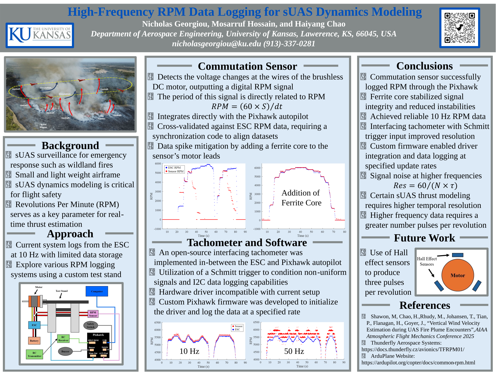
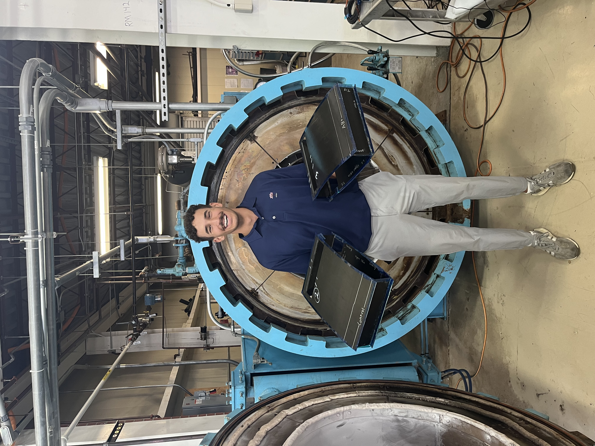
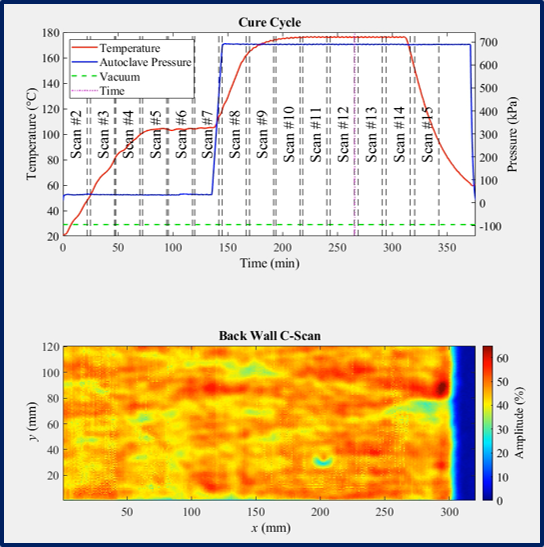

Cooperative Unmanned Systems Lab
My work at CUSL focuses on developing high-frequency revolution per minute (RPM) data logging systems and creating dynamic thrust models for Unmanned Aerial Systems (UAS). I familiarized myself with open-source autopilot code using GitHub and Linux to navigate, edit, and compile enhanced firmware to log RPM data at higher rates (50 Hz) than ever before.
As an Undergraduate Research Fellow, I designed a motor test stand to log real-time RPM data safely. Using a sensor to detect voltage changes in AC motor wires, I synchronized electronic speed controller data with flight controller outputs, validating new RPM systems for thrust modeling.

Composites Engineering

During my internship at NASA Langley Research Center, I fabricated composite wingboxes using advanced manufacturing techniques. My contributions included implementing a novel bonding technique for skin-to-spar interfaces, conducting ultrasonic testing for non-destructive evaluation, and designing composite molds to support research initiatives.
I prototyped a composite tubular spar mold for a wing test article, addressing challenges like coefficient of thermal expansion (CTE). This project involved CAD modeling, detailed engineering drawings, and multiple iterations of rapid prototyping to achieve precise specifications.
The photo shows me standing in front of the autoclave with the two wingboxes I manufactured. The two large slits were made for mechanical testing — specifically Double Cantilever Beam (DCB) testing, which I was lucky enough to experiment with.
In-Situ Analysis of Tow-Steered Composites

Also at NASA Langley, I worked on an in-situ ultrasonic analysis of a tow-steered composite panel. A tow-steered composite contains tow paths that are curved together in high-stress regions using automated fiber placement (AFP).
Due to AFP, many defects can occur during layup. These defects were monitored during the panel's autoclave cure using a novel in-situ ultrasonic scanner. My work involved correlating the in-situ c-scans to cure cycle parameters — temperature, pressure, Tg, and more.
For a deeper look, see the conference presentation and the full research paper.